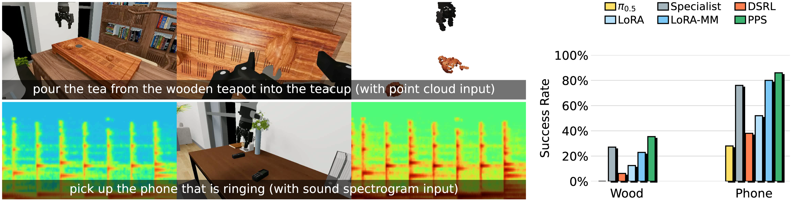

Proxy Policy Steering
Robotics foundation models carry broad manipulation priors from large-scale data, but specializing them to a new task remains the deployment bottleneck. This requires injecting new task-specific behavior from limited demonstrations without eroding their broad capabilities. We introduce Proxy Policy Steering (PPS), a novel adaptation method that addresses this challenge by training two lightweight proxy policies. A reference proxy models the frozen base's behavior on target-task observations, and a task proxy, initialized from the reference, captures how this behavior changes under task supervision. Their difference forms a calibrated velocity-space residual that steers the frozen base sampler at every denoising step.
We identify the conditions under which this residual isolates the change induced by task supervision, and validate them empirically. On 8 real-world and 4 simulation manipulation tasks, PPS lifts the state-of-the-art π0.5 base policy by 53% absolute success rate on average, with 0-to-1 gains on tasks the base never solves, while preserving the base's broad capabilities. PPS outperforms LoRA fine-tuning, from-scratch specialists, residual policies, and prior inference-time steering methods.

PPS trains two small proxy policies and uses their velocity difference to steer the frozen base sampler:
- Reference proxy vref: distilled from the base's denoising trajectories on the target task. It captures the base-like behavior on this specific task that the proxy architecture can express.
- Task proxy vtask: initialized from vref, then fine-tuned on task demonstrations with the standard flow-matching loss.
At inference, PPS integrates the guided velocity field:
their velocity-space residual captures the task-induced distribution shift and steers the frozen base policy at inference to apprximate a fine-tuned distribution.
We evaluate PPS on 8 real-world manipulation tasks and 4 simulation tasks, spanning long-horizon goals, articulated and deformable objects, and diverse skills. The benchmark mixes tasks the base model has seen during pretraining with challenging out-of-distribution tasks. PPS delivers consistent gains over the base model and outperforms fine-tuned models, training-from-scratch policies, and prior steering-based baselines.

Because PPS leaves the base model untouched, the combined policy inherits the base's recovery and out-of-distribution priors. On Jeans Folding, a human perturbs the rollout mid-execution by unfolding or dragging the cloth; PPS recovers from each perturbation and completes the task, while LoRA fine-tuning overfits to the demonstrations and fails after the first perturbation.
The proxy architecture is independent of the base model's conditioning. PPS can route an extra modality — a 3D point cloud for the wooden-teapot pouring task, or an audio spectrogram for the ringing-phone identification task — through the task proxy without touching the RGB-only base. PPS clears both tasks where the base model and RGB-only baselines fall short.
